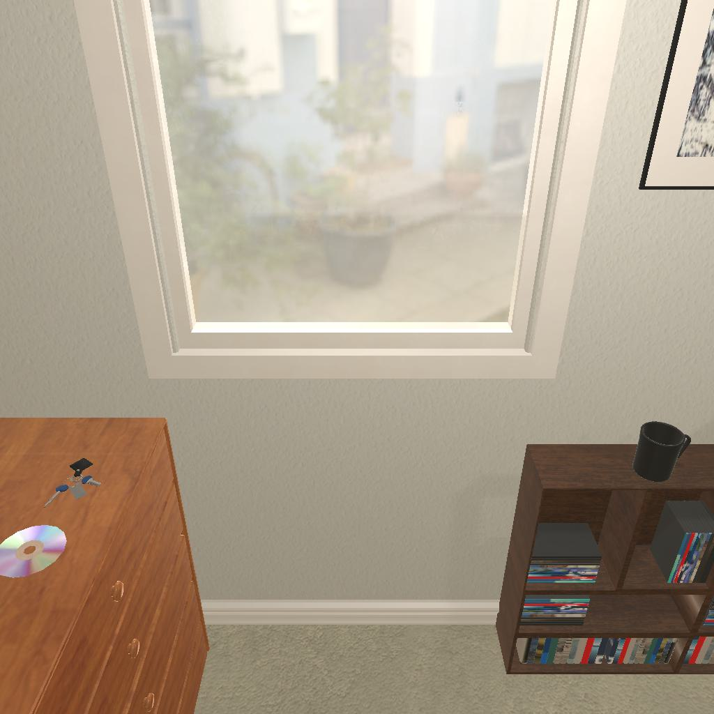
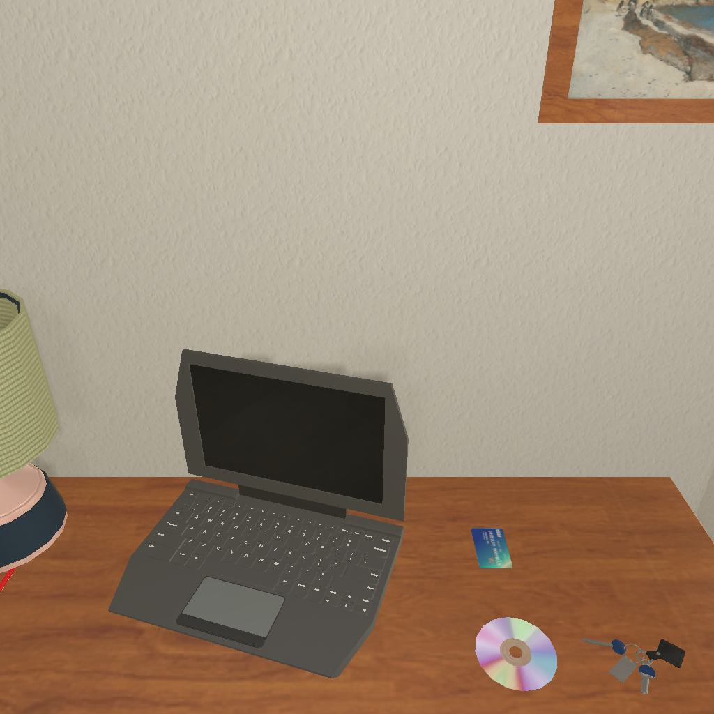

---------------------------------------------------------task: 1---------------------------------------------------------
--------------------------------------------------------------------------------------------------------------------------------------------------------------------
--------------------------------------------------------------------------------------------------------------------------------------------------------------------
Step:--------------------------------------------------------------------------1-------------------------------------------------------------------------------
----------------------------------------
VLM Prompt:
Image1:
Image2:
**Instruction**
1. Analyze the provided images to identify all visible household objects and compare the difference between images (e.h. whether the object is opened or not and taken on hand or not), focusing on those relevant to the task description "examine the alarmclock with the desklamp."
2. Use the analysis of images and the task hint "The agent must find an object of the desired type, locate and turn on a light source with the desired object in-hand." to answer the question: what is the most reasonable action in the choices for the task description "examine the alarmclock with the desklamp"?
3. Decide and write the answer using the template: The answer is: (i): , where i is the real number. If there is no desired object in images, search every place based on **Initial Observation** to find the object. And if no one is exactly correct, choose a similar answer.
**Initial Observation**
You are in the middle of a room. Looking quickly around you, you can see bed (1), dresser (1), drawer (1-10), garbagecan (1), shelf (1-7)
**Answer Choices**
(1): go to bed 1
(2): go to drawer 1
(3): go to drawer 2
(4): go to drawer 3
(5): go to drawer 4
(6): go to drawer 5
(7): go to garbagecan 1
(8): go to drawer 6
(9): go to drawer 7
(10): go to drawer 8
(11): go to drawer 9
(12): go to drawer 10
(13): go to shelf 1
(14): go to shelf 2
(15): go to shelf 3
(16): go to shelf 4
(17): go to shelf 5
(18): go to shelf 6
(19): go to shelf 7
(20): take laptop 1 from dresser 1
(21): take cd 1 from dresser 1
(22): take keychain 1 from dresser 1
(23): take creditcard 1 from dresser 1
(24): take pen 1 from dresser 1
(25): use desklamp 1
(26): examine dresser 1
**Answer**
Let's think step by step by following the instructions.
----------------------------------------
----------------------------------------
Original Response:
First, we analyze the images provided. There is no visible alarm clock or desk lamp in either image. We see a dresser with various objects on it (CD, keychain), a shelf with books and a mug, and a desk with a laptop, CD, keycard, and keys. None of these objects are relevant to the task description of examining an alarm clock with a desk lamp.
Based on the task hint, we need to find an alarm clock and a desk lamp. Since they are not visible in the images, we must search the room based on the initial observation.
The most reasonable action to complete the task description "examine the alarm clock with the desk lamp" would be to first find the alarm clock and the desk lamp. Since they are not specified in the answer choices, we need to search every place. The dresser and the shelf are the only pieces of furniture in the room that could potentially have these objects, but since the dresser is already visible in the images and there is no alarm clock or desk lamp, the next reasonable place to check would be the shelves.
The answer is: (13): go to shelf 1
----------------------------------------
----------------------------------------
>>> Refine Original VLM Response and Get Pure Action: go to shelf 1
----------------------------------------
-----------------------------------------------------------------
Running time: 10.129963159561157 seconds
Total Money: 0.45115999999999995
-----------------------------------------------------------------
-----------------------------------------------------------------
Text Observation:You arrive at loc 13. On the shelf 1, you see a alarmclock 1, and a mug 1.
-----------------------------------------------------------------
UNSUCCEED